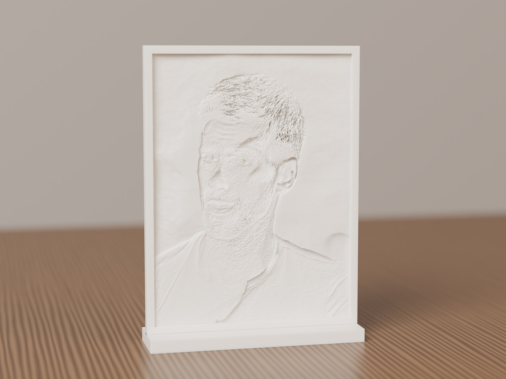
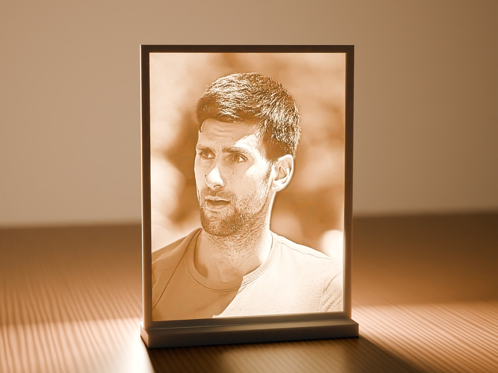
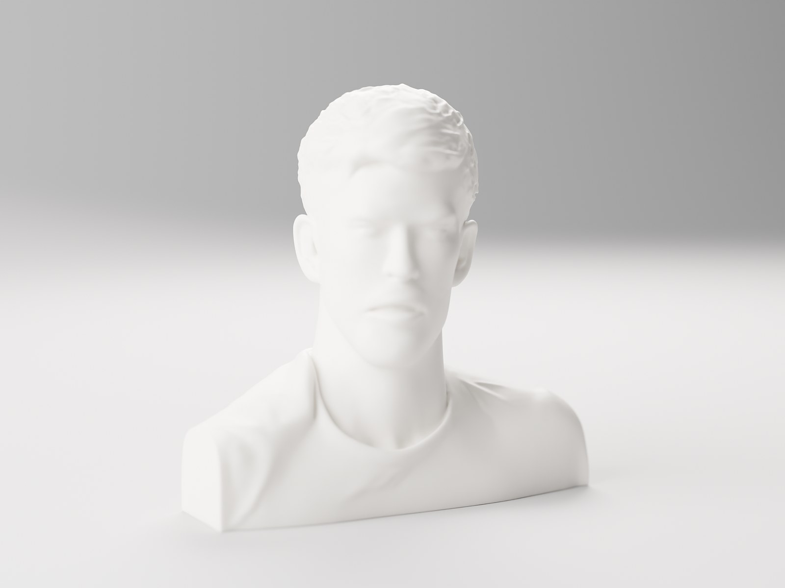
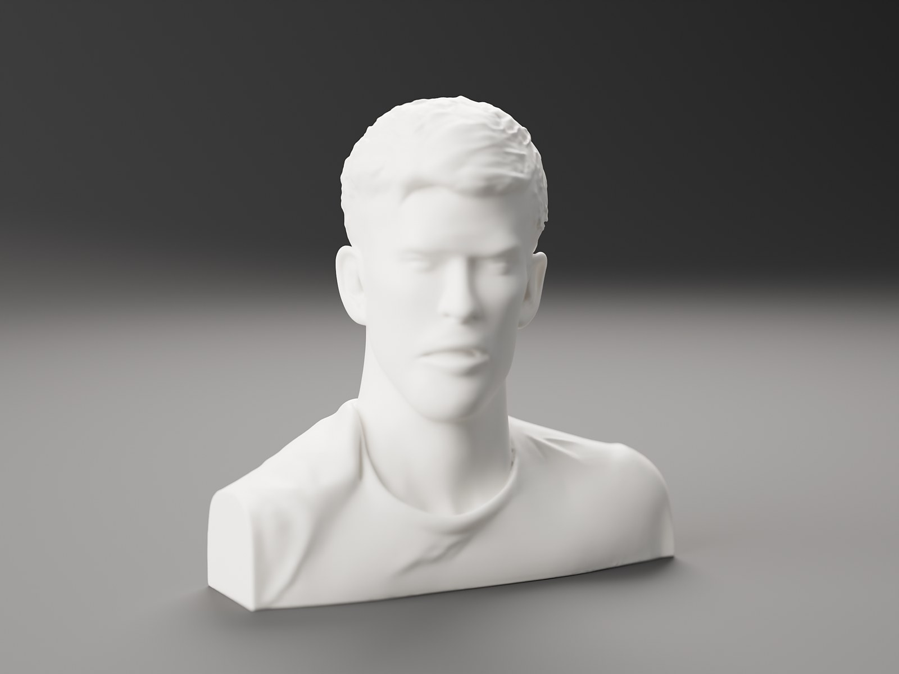
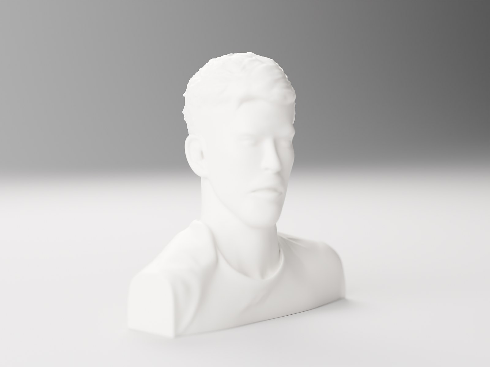
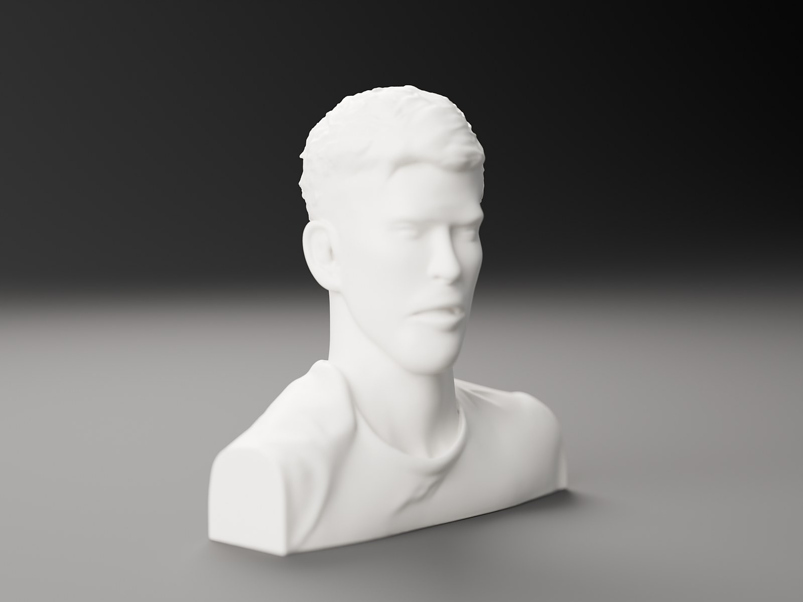

Shapes
Flat, curved, cylinder, prism and globe.
From a framed photo to a hexagon lamp or a moon globe with top and bottom openings.
FlatCurvedCylinderPrismGlobe
Lumi
Turn any photo into a 3D-printable lithophane, or a full 3D model. Free, in your browser.
About 96 MB each. The portable version runs without installing. The app isn't code-signed yet, so if Windows SmartScreen appears, choose More info → Run anyway. All releases


Not a photo of a print: a Lumi mesh rendered with physically based light in Blender Cycles.
A lithophane is a thin sheet that's thicker where the photo is dark. In daylight it's a plain white relief. Put a lamp behind it and the portrait appears, with every tone made by light passing through plastic.
This is the real Lumi lithophane engine, running entirely in your browser. Drop in a photo, shape it, then download an STL or 3MF. Your image never leaves your device.
Shapes
From a framed photo to a hexagon lamp or a moon globe with top and bottom openings.
Slicer-friendly
<1M
triangles per export, 600k by default. Watertight meshes open instantly in Bambu Studio, PrusaSlicer, OrcaSlicer and Cura.
Outlines & frames
Rectangle, rounded, oval, heart, hexagon, octagon, star or arch, with a beveled, flat or rounded frame.
Accessories
A stand, hanging loop, nightlight holder, lamp fitting and connectors, built into the same mesh.
Tone
A linear or light-accurate curve, filament opacity, and a backlit preview before you print.
Photo editing
Crop, rotate, auto levels, brightness, contrast, gamma, shadows and highlights, smoothing, sharpening, edge fade, invert and text.
Private
0
uploads. Everything runs on your device.
Formats
5
STL, ASCII STL, 3MF, OBJ and PLY.
Precision
0.02mm
default optimizer tolerance, far finer than a 0.4 mm nozzle.
Pop 3D · Desktop app
Lumi for Windows goes beyond lithophanes. Pop 3D builds a complete, printable 3D model from a single photo, on your own NVIDIA GPU and offline. It then repairs it, gives it a flat base and optimizes it for your slicer.




Rendered in Blender Cycles from the exported STL with 0.12 mm layer lines. Also available online through free Hugging Face Spaces (Hunyuan3D-2/2.1, TRELLIS).
Everything above, plus Pop 3D, depth reliefs and mesh repair, in a native desktop app.


Load a photo or pick a quick template.
Needs Windows 10 or 11, Node.js 20+ and Git. An NVIDIA GPU is optional, for offline Pop 3D. npm run dist creates an installer and a portable .exe.
# get the code
git clone https://github.com/chahatdeep/Lumi.git
cd Lumi
npm install
# run it
npm start
# Windows installer + portable exe
npm run distLumi is source-available under the PolyForm Noncommercial License 1.0.0. Use, change and share it for personal, hobby, educational and research projects. Commercial use, including selling the software, using it in a business or selling prints commercially, needs a separate license.